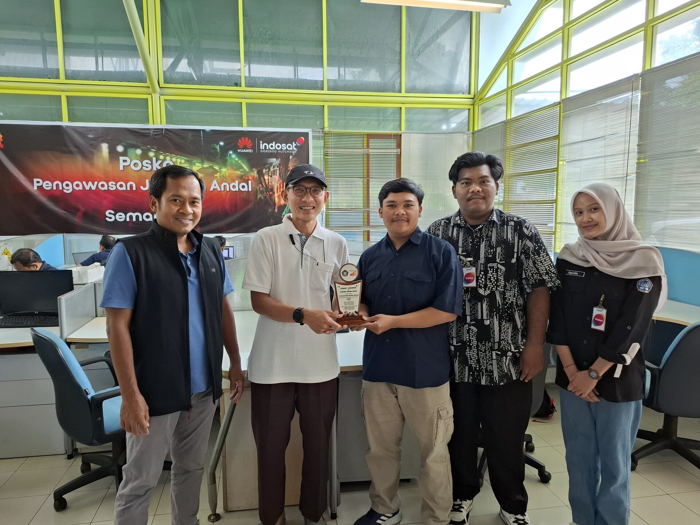
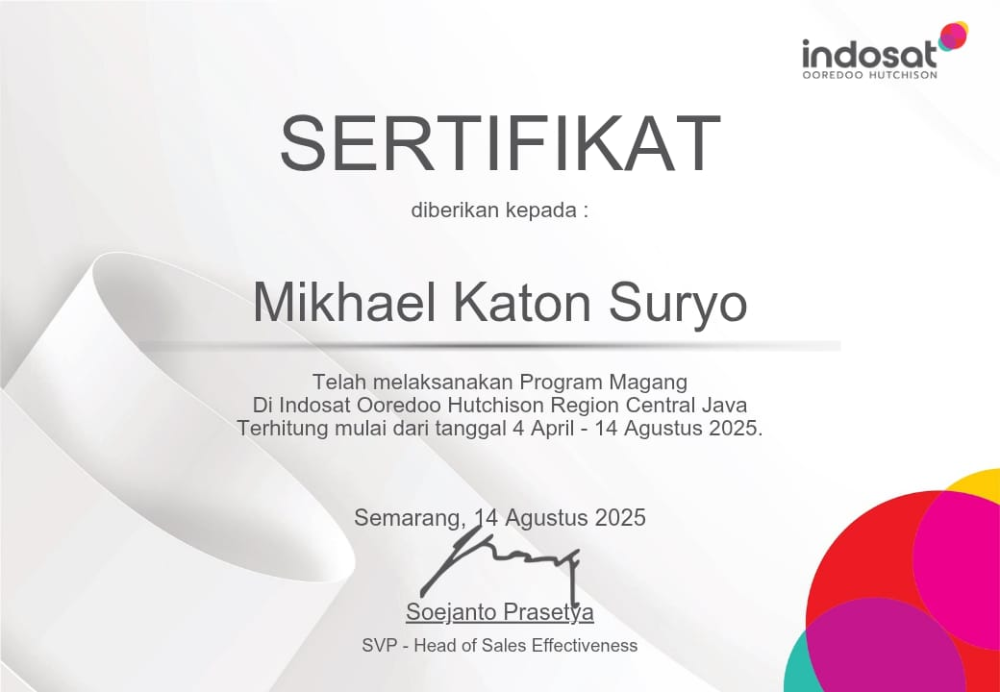
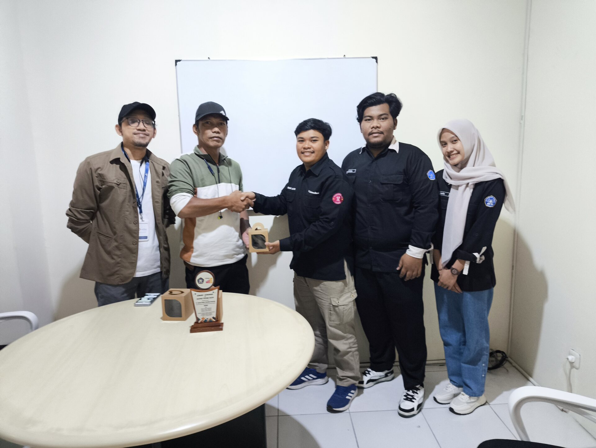
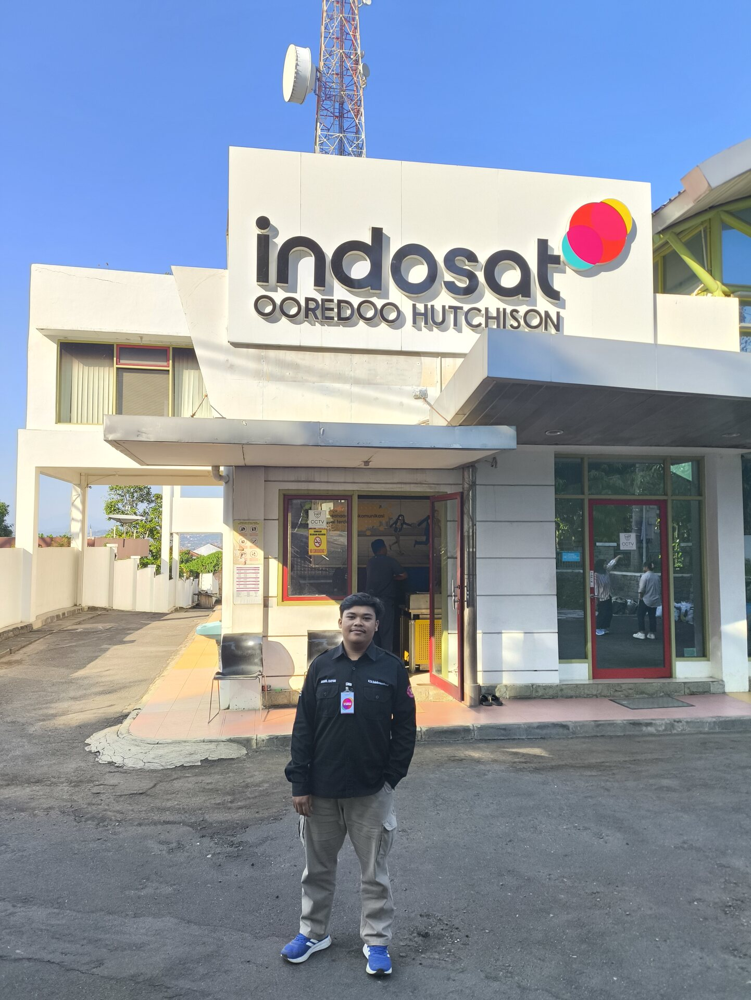
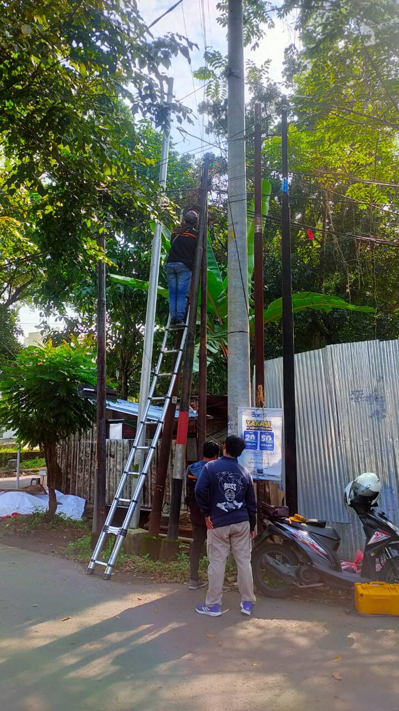
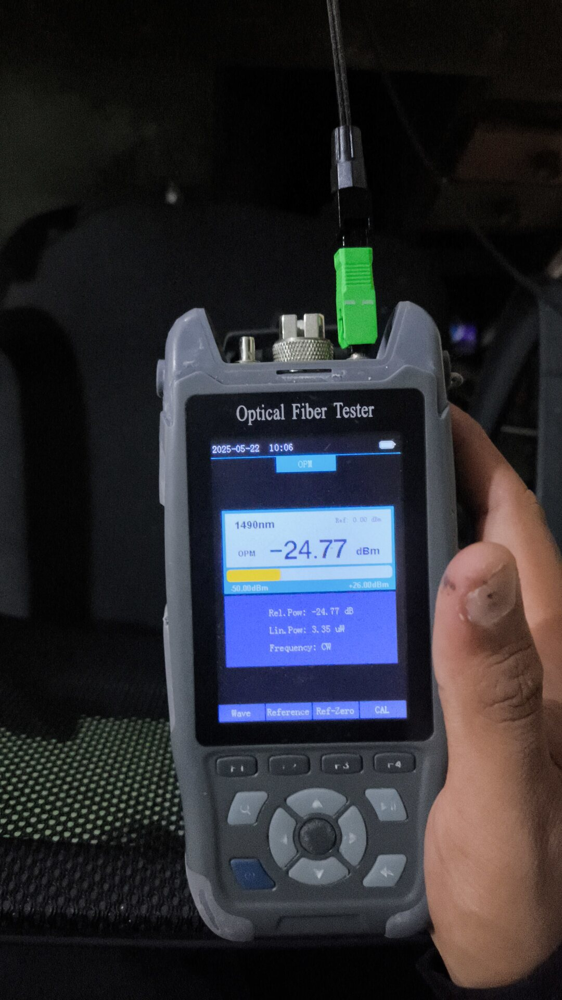
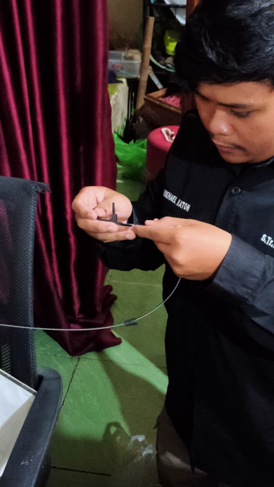
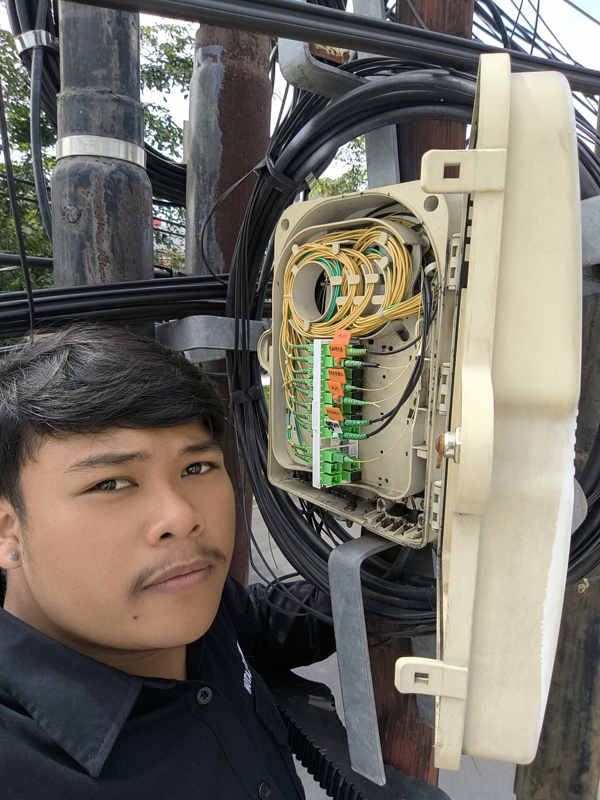
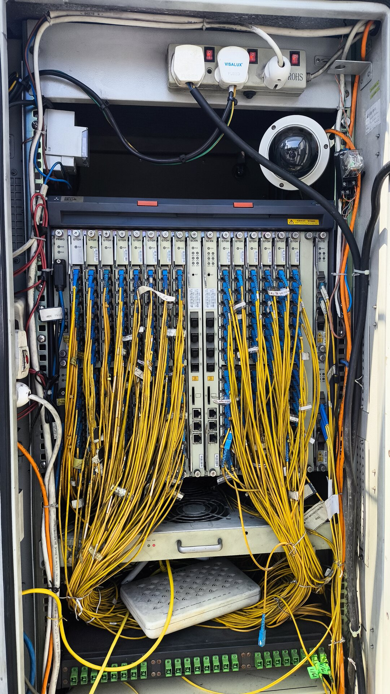
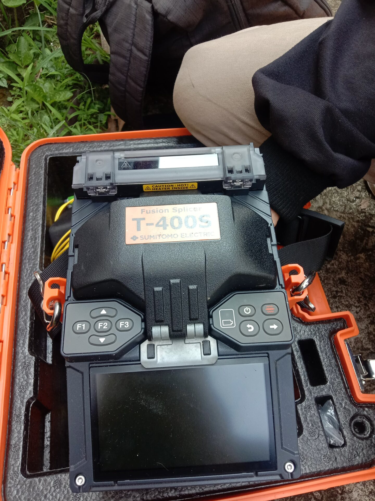

Pengalaman Industri
Apr 2025 — Agu 2025
5 Bulan
Semarang · On-site
Semarang · On-site
Magang Operasional Jaringan FTTH
Indosat HiFi · PT Indosat Ooredoo Hutchison
Terlibat langsung dalam instalasi, pemeliharaan, monitoring, dan troubleshooting jaringan FTTH. Pengalaman mencakup penanganan perangkat ONT, ODP, ODC, hingga OLT serta monitoring jaringan menggunakan NetNumen.










8–9
Lokasi Pemeliharaan
per Hari
per Hari
Hingga 7
Lokasi Instalasi
per Hari
per Hari
3
Anggota Tim
Dipimpin
Dipimpin
Tanggung Jawab
- Melakukan instalasi jaringan FTTH dari ODP hingga sisi pelanggan.
- Melakukan pemeliharaan dan troubleshooting infrastruktur ONT, ODP, ODC, dan OLT.
- Menggunakan NetNumen untuk monitoring OLT, identifikasi gangguan, dan mendukung analisis jaringan.
- Melakukan troubleshooting secara mandiri pada berbagai kasus gangguan di lapangan.
- Menyusun laporan teknis mengenai kondisi lapangan, kendala, dan hasil penanganan.
- Dipercaya sebagai ketua tim magang beranggotakan 3 orang untuk koordinasi pekerjaan dan pelaporan kendala lapangan.